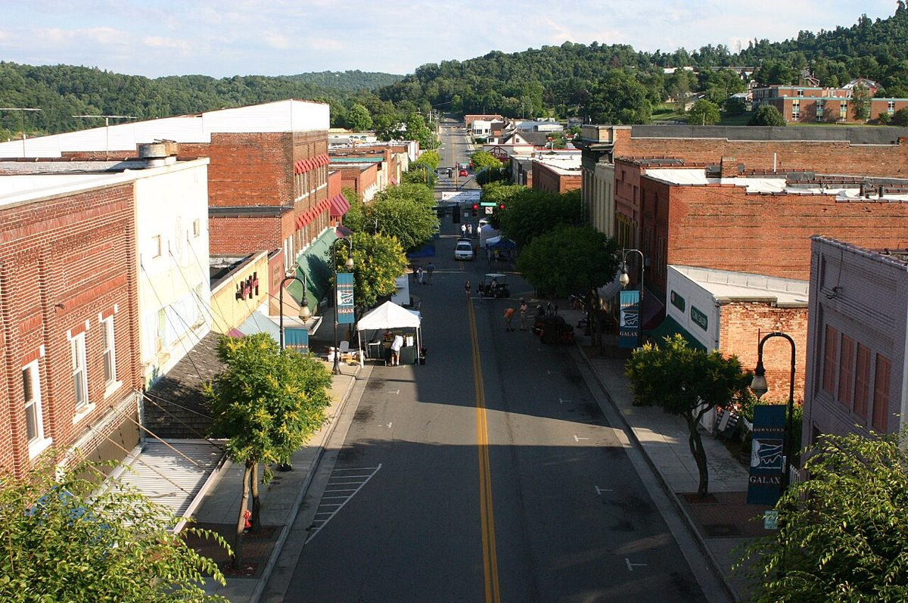

VIRGINIA · OPTIONAL DISCOVERY
Galax
Wednesday · November 11 · optional
An optional variation for your November road trip. Add it only if it suits your pace; no extra overnight or reservation is assumed.
THE FEEL OF THE PLACE
Atmosphere.
Galax has a working-town Main Street, old-time music connections and access to the New River Trail, giving it a different feel from the resort villages farther south. It could replace part of Wednesday’s scenic driving with lunch and a short downtown walk. Music is part of the town’s identity, but no Wednesday performance is assumed; keep the detour conditional on daylight.

Resized and JPEG-compressed for this guide; no scene alterations.
Representative photograph from the linked archive; seasons and current conditions will differ.
AN OPTIONAL CHANGE OF PACE
A working-town lunch stop
EAT WELL, KEEP IT SIMPLE
A couple of good places to eat.
Casual choices for this stop, with restaurant information and independent reviews or local guides to help you choose. Published prices exclude extras unless noted; recheck hours before setting off.
The Galax Smokehouse
Downtown barbecue at 101 North Main Street. Consider a sandwich or a shared side for lunch, with current reviews available to compare before committing.
Budget: Budget-to-moderate barbecue choice; current official item prices unavailable while website is being rebuilt.
When to go: Restaurant.com lists Wednesday 11am–9pm; official holding page supplies phone but no hours. Confirm 276-236-1000.
Macado’s Galax
A Main Street sandwich-and-burger fallback at 201 North Main Street. Useful if you prefer a broad casual menu to barbecue, without leaving the downtown stop.
Budget: Restaurant ordering menu lists classic burger with side $13.95 and chicken tenders $10.95; tax, drinks and extras additional.
When to go: Restaurant ordering storefront lists Wednesday 9am–11pm; confirm kitchen hours.
CHECK BEFORE YOU GO
Useful sources.
Check opening hours and road or trail access shortly before travel. Keep the detour flexible around daylight and your next stop.